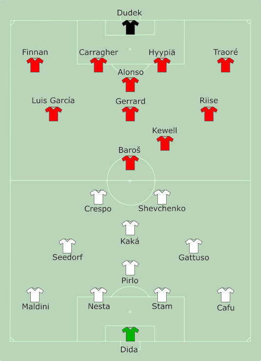

Fundado em 1892, na Inglaterra, tinha seu uniforme azul e seu nome Athletic, até que em 1965 mudaram para as cores vermelha e branca, com o nome Liverpool, além disso, seu lema era You'll Never Walk Alone empregado até hoje no clube (Você nunca caminhará sozinho). Segunda equipe mais vitoriosa na Inglaterra com 1 Mundial de Clubes, 6 Champions League, 3 Copa da EUFA, 19 Premier League, entre outras tças de copa da inglaterra. Seu período de glória foi entre 1970 e 1980, com o domínio do treinador Bob Paisley (maior treinador que o liverpool já teve), com 14 títulos.
Um dos anos que ficaram marcados na história do clube, pois, conquistaram sua quinta Champions, em um jogo em que estavam perdendo de 3 a 0 e conseguiram levar a partida para os pênaltis. Com isso, o goleiro Dudek, defendeu duas cobranças e o Liverpool foi campeão da UCL
Após uma crise no clube, sem vencer títulos, conquistou a Copa da Liga Inglesa, em 2011
Um ano que ficou marcado, pois o Liverpool, voltou a bater de frente com os grandes da Inglaterra, sendo vice da Premier League, com um elenco que ficou marcado (Suárez, Coutinho, Sterling, Sturridge)
Os dois maiores clubes ingleses, são os maiores rivais, disputam sempre jogos emocionantes na Inglaterra. A maior goleada da história foi de 7 a 0 para o Liverpool
| Estatísticas | |
|---|---|
| Partidas | 211 |
| Vitórias do Liverpool | 71 |
| Vitórias do Manchester United | 82 |
| Empates | 58 |
| Gols Marcados | 564 |
Chamado de Merseyside Derby, por causa, de um rio que corre entre a cidade de Liverpool(já que as duas equipes são da mesma cidade).Considerado, por muitos, o clássico amistoso, pois o Éverton não continuou o legado de brigas por títulos após a década de 90.
Um fato curioso é que Anfield Road era a casa do Éverton e inicialmente os Reds, serem Azuis.
Uma temporada que o torcedor do Liverpool, jamais esquecerá.
Campeão da Champions League (18/19).
Campeão da Premier League (19/20).
Campeão Mundial (19/20).
Campeão Super Taça da UEFA (19/20).